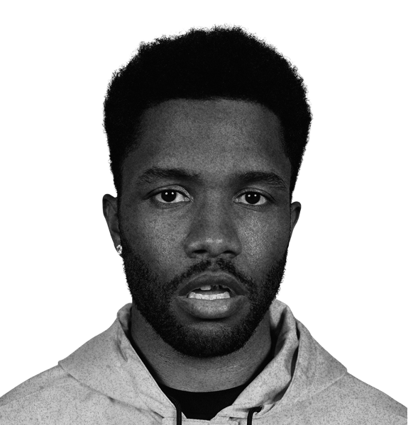
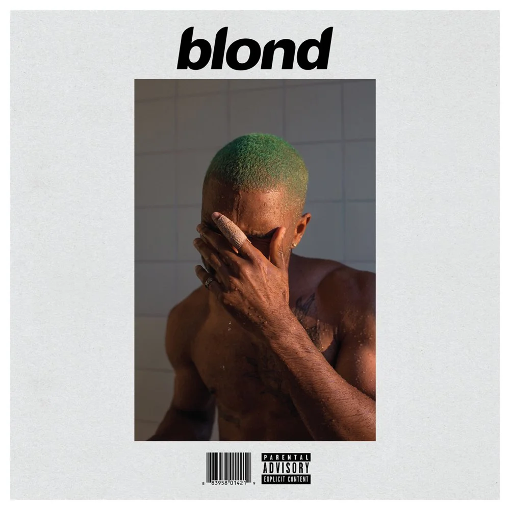

O ARTISTA
Frank Ocean é, sem dúvidas, uma das vozes mais inovadoras e enigmáticas da música contemporânea. Mais do que um cantor e compositor, ele é um contador de histórias que redefiniu as fronteiras do R&B alternativo e do pop. Com obras-primas aclamadas como Channel Orange e Blonde, Frank constrói atmosferas sonoras únicas, misturando letras profundas sobre amor, juventude e nostalgia com arranjos vocais inconfundíveis. Sua música não é feita apenas para ser ouvida, mas para ser sentida.
D I S C O G R A F I A

channel ORANGE

blonde